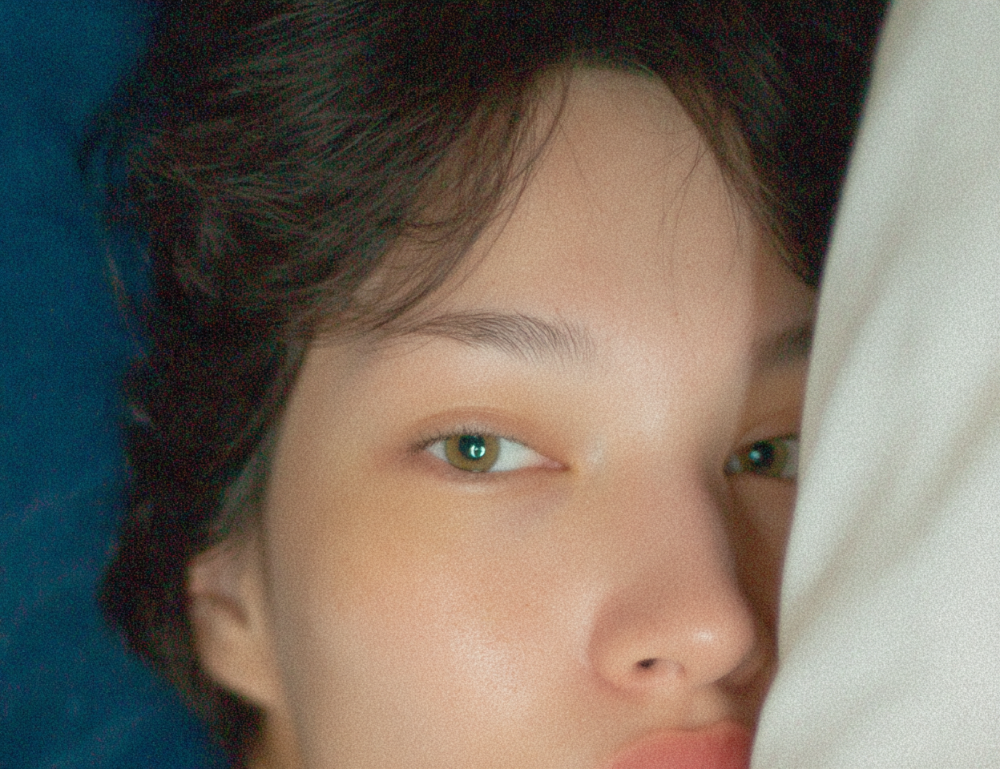
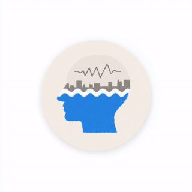
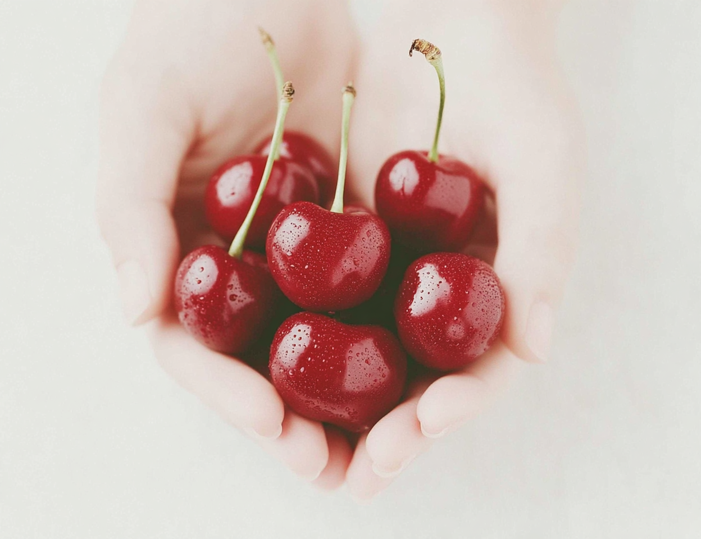
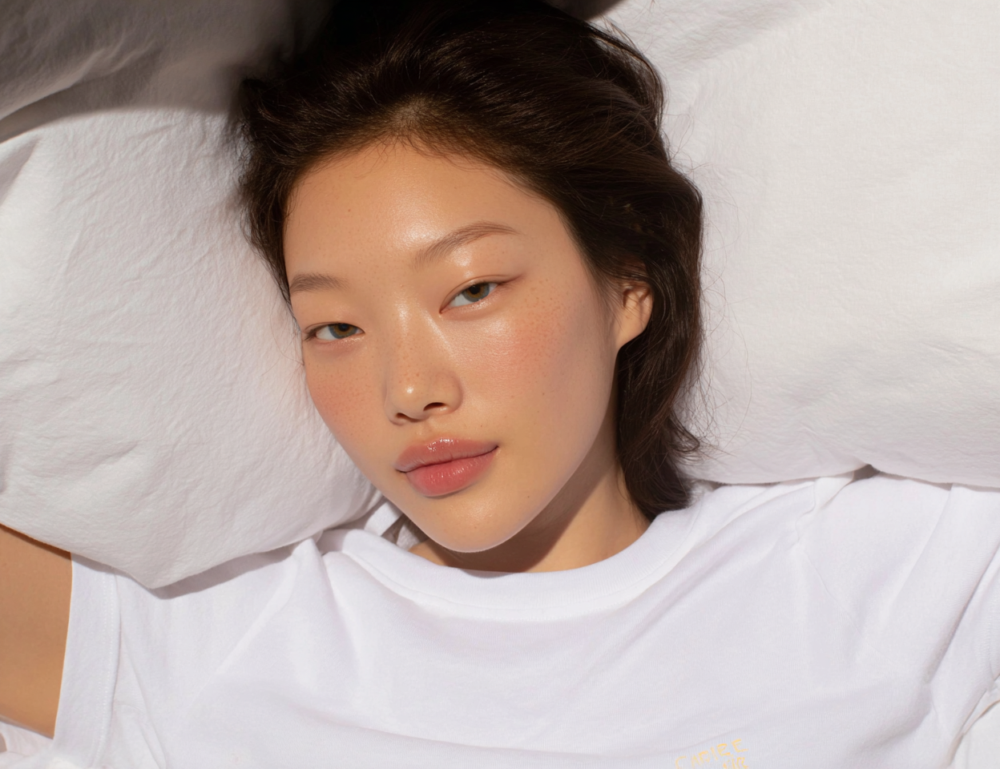
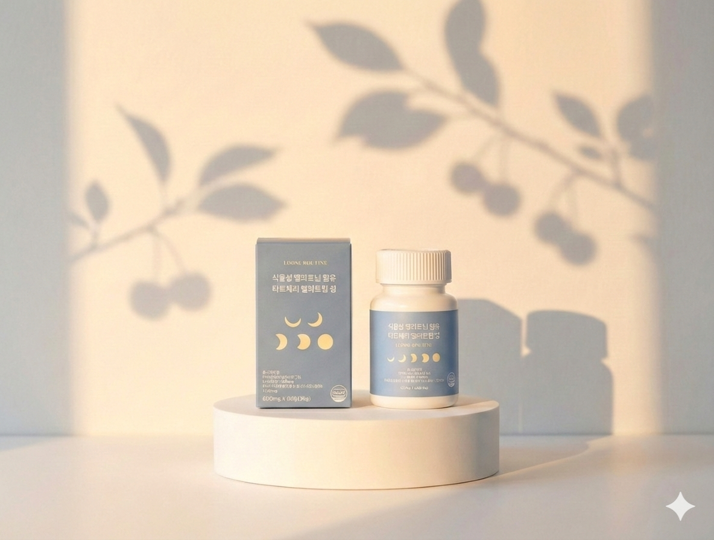

충분히 피곤한데 왜 잠이 안 올까요.
문제는 수면 시간이 아니라 수면의 질이에요.

퇴근해도 머릿속에서 일 생각이 멈추질 않아요. 침대에 누워도 내일 일정, 못 끝낸 업무, 나눴던 대화들이 계속 돌아가요.
스트레스가 높아지면 코르티솔이 올라가요. 코르티솔은 멜라토닌 분비를 억제해요. 피곤한데 잠이 안 오는 건 의지 문제가 아니에요. 뇌가 아직 각성 상태인 거예요.
빛이 줄어들면 뇌 송과체에서 멜라토닌이 분비되고, 체온이 떨어지면서 졸음이 와요. 이게 자연스러운 수면 신호예요. 그런데 이 스위치가 나이와 함께 망가지기 시작해요.
테아닌은 녹차에서 추출한 아미노산이에요. 알파파를 유도해서 뇌를 각성 상태에서 이완 상태로 전환시켜요. 졸리게 만드는 게 아니라 긴장을 풀어주는 거예요.

테아닌이 뇌 긴장을 풀어주면, 억제됐던 멜라토닌이 제대로 분비될 수 있어요. 먼저 뇌를 끄고 → 수면 호르몬이 작동하는 순서예요.
성분을 나열한 게 아니에요. 잠들지 못하는 원인 순서대로, 체내 작용 순서에 맞게 배합했어요.

수면제나 합성 멜라토닌이 걱정되셨다면, 루즈루틴은 식물성 원료에서 추출했어요. 다음 날 멍한 느낌이 나는 데는 이유가 있어요.
| 구분 | 수면제·합성 멜라토닌 | 루즈루틴 식물성 |
|---|---|---|
| 작용 방식 | 중추신경 강제 억제 | 생체 리듬에 맞춘 자연 유도 |
| 체내 잔류 | 약효가 오래 남음 | 잔류감 없이 자연 소실 |
| 다음 날 상태 | 멍함, 낮 졸림 | 맑고 개운하게 기상 |
| 의존성 | 내성·의존성 우려 | 부담 없이 꾸준히 |


의지 문제가 아니에요. 뇌가 긴장을 못 푸는 거예요.
식물성 멜라토닌 + 테아닌으로 뇌부터 끄고 시작해 보세요.
취침 30분 전 1정. 잠의 깊이가 달라져요.
루즈루틴 멜라토닌 보러가기